ハンズオンについての前提
- AWSコンソールを使うブラウザはFirefox or Chromeで実施をお願いします。
- AdministratorAccessポリシーが追加されたIAMユーザーで作業をお願いします。
- リージョンは東京リージョンを使用します。
- 費用は数10円前後要します。
- ハンズオンについての注意点について可能な限り配慮しますが、補償・保証する物ではございません。
- VPCを新規作成します、１リージョンに５つ以上は作成できないため不要な物は事前に削除をお願いします。
構成図
はじめにCodeStarを利用したCodePipelineの流れを作成します。
その後、個別にAWSサービスを組み合わせたCodePipelineの流れを作成します。
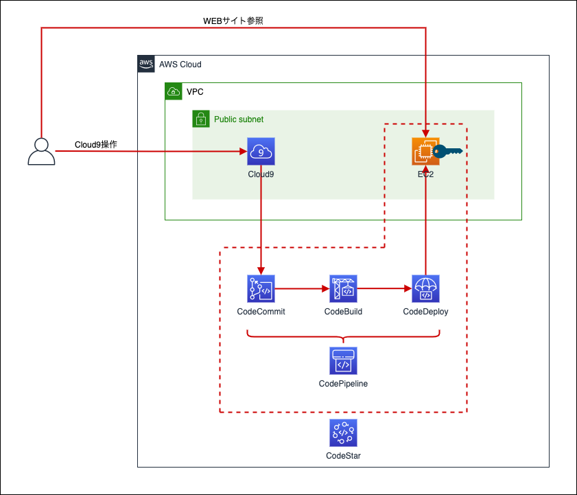
AWSサービスの説明
Cloud9
- ブラウザのみでコードを記述、実行、デバッグできるクラウドベースの統合開発環境 (IDE)
- JavaScript、Python、PHP などの一般的なプログラム言語に不可欠なツールがあらかじめパッケージ化されている
CodeCommit
- Git ベースのリポジトリをセキュアにホストする完全マネージド型のソース管理サービス
- CodeCommit を使用して、ソースコードからバイナリまですべてのものをセキュアに保存可能
CodeBuild
- ソースコードをコンパイルし、テストを実行し、デプロイ可能なソフトウェアパッケージを作成できる完全マネージド型のビルドサービス
- ビルドサーバーのプロビジョニング、管理、スケーリングが不要
CodeDeploy
- Amazon EC2、AWS Fargate、AWS Lambda、オンプレミスで実行されるサーバーなどへデプロイを自動化
- 新しい機能をすばやく簡単にリリース可能
CodePipline
- 完全マネージド型の継続的デリバリーサービスで、素早く確実性のあるアプリケーションとインフラストラクチャのアップデートのための、パイプラインのリリースを自動化
- 定義したリリースモデルに基づき、コードチェンジがあった場合のフェーズの構築、テスト、デプロイを自動化
CodeStar
- アプリケーションを迅速に開発および構築して AWS にデプロイ可能
- 統合されたユーザーインターフェイスを備えているため、ソフトウェア開発アクティビティを 1 つの場所で簡単に管理可能
1.画面遷移
マネージメントコンソール → VPC → 「VPCウィザードを起動」ボタン押下
2.VPC設定の選択
「１個のパブリックサブネットを持つVPC」を選び「選択」ボタンを押下
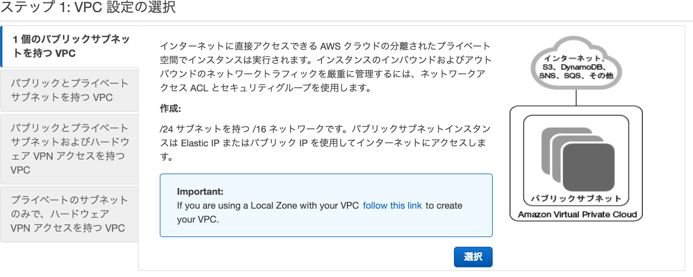
3.1 個のパブリックサブネットを持つ VPC
以下を設定し、「VPCの作成」ボタンを押下
- VPC名:code-handson
- サブネット名:code-handson

4.VPC が正常に作成されました
正常終了メッセージが表示されます。
正常終了以外の場合はVPCが既に5つ作成されていると思われます。
- 削除して再実行
- 既存でパブリックサブネットを保有しているVPCを利用
のどちらをお願いします。
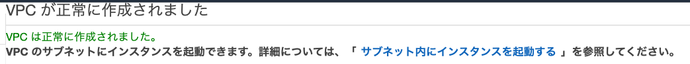
1.画面遷移
マネージメントコンソール → EC2 → 左ウィンドウからキーペアを選択 → 「キーペアを作成」ボタンを押下
2.キーペアを作成
以下を設定し、「キーペアを作成」ボタンを押下
- 名前:code-handson
code-handson.pemがダウンロードされますが、ハンズオンでは利用しないので、放置して大丈夫です。
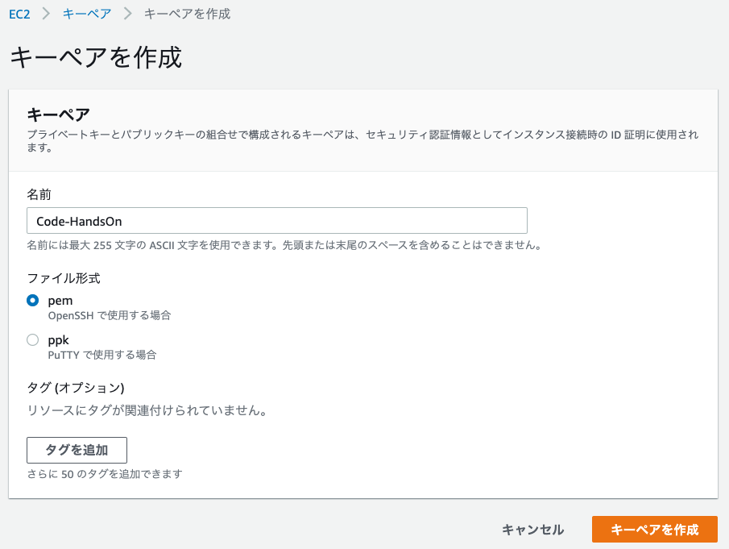
1.画面遷移
マネージメントコンソール → CodeStar → 「プロジェクトの作成」ボタンを押下
2.プロジェクトテンプレートを選択
2ページ目のHTMLを選択して、「Next」ボタンを押下
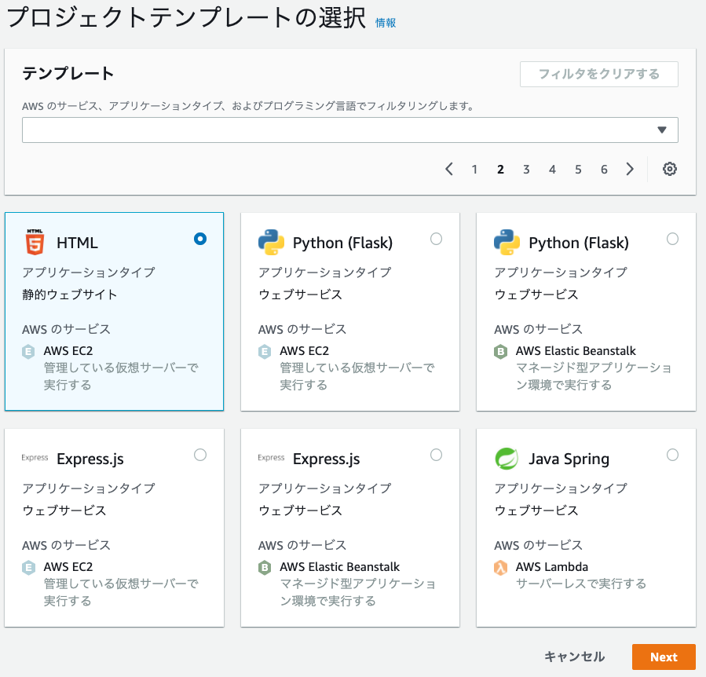
3.プロジェクトの設定
以下を設定し、「Next」ボタンを押下
- プロジェクト名:code-handson
- プロジェクトID:code-handson
- リポジトリプロバイダーを選択する:CodeCommit
- リポジトリ名:code-handson
- インスタンスタイプ:t2.micro
- VPC:先ほど作成したVPC(タグがcode-handson)
- サブネット:先ほど作成したサブネット(タグがcode-handson)
- キーペア:code-handson
- 私は、プライベートキーファイルにアクセスできることを認めます:ON
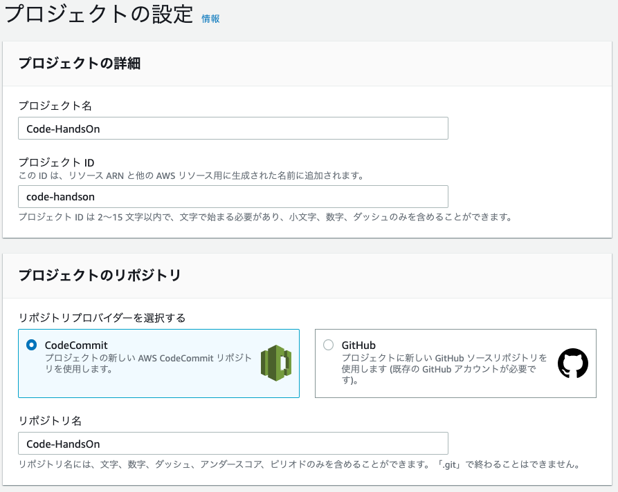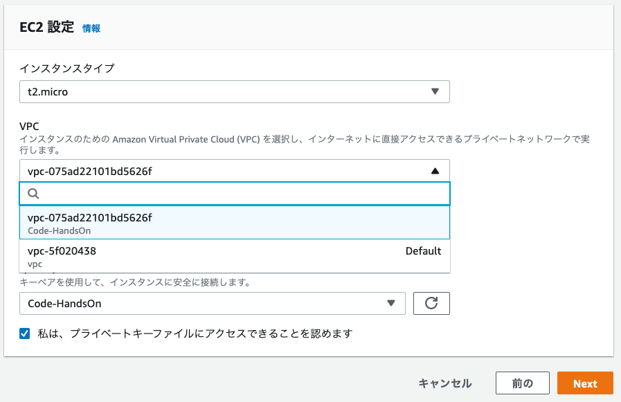
4.レビュー
内容を確認した上で「プロジェクト」の作成ボタン押下
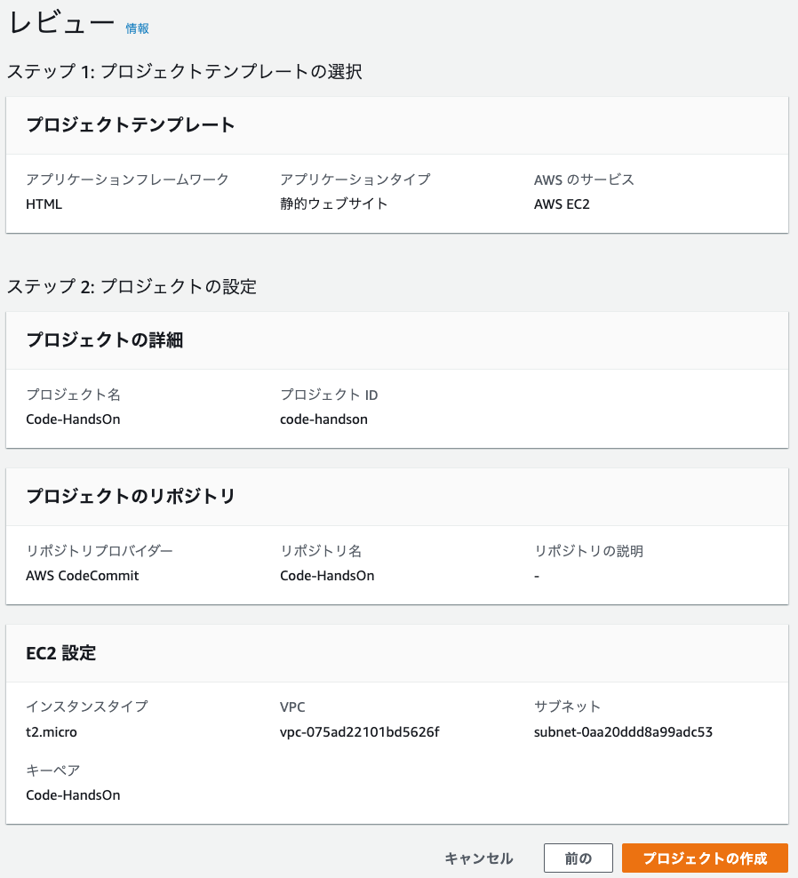
5.しばし待機（約5分）
興味があれば、CloudFormationを確認下さい。
CodeStarから関連するAWSサービスが立ち上がってくるのが確認することができます。
5分立っても「アプリケーションの表示」がアクティブにならない場合にはブラウザの再読み込みをしてください。
6.アプリケーションの表示
CodeStarの画面の右上にある「アプリケーションの表示」ボタンを押下
EC2上で稼働するWEBサイトが表示されます。
WEBサイトのアドレスは今後も行いますので、メモに取っておいてください。
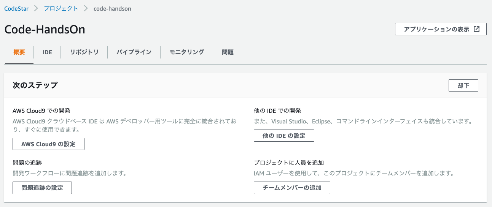 ↓
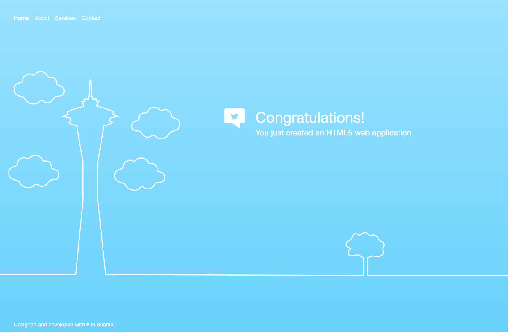
1.画面遷移
マネージメントコンソール → CodeStar → プロジェクト → code-handson → 概要TAB → 「AWS Cloud9の設定」ボタン押下
2.AWS Cloud9 環境の作成
以下を設定し、「環境の作成」ボタンを押下
- インスタンスタイプ:t2.micro
- VPC:先ほど作成したVPC(タグがcode-handson)
- サブネット:先ほど作成したサブネット(タグがcode-handson)
- 環境名:code-handson
- コスト制約の設定:30分後
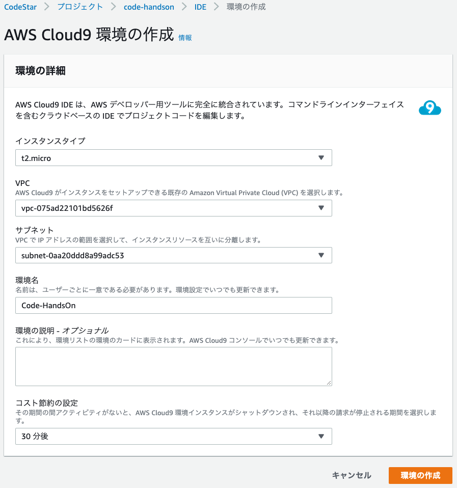
3.しばし待機（約３分）
興味があれば、CloudFormationを確認下さい。
CodeStarからCloud9が立ち上がってくるのが確認することができます。
3分立っても「Open IDE」が表示されないブラウザの再読み込みをしてください。
4.画面遷移
CodeStar → プロジェクト → code-handson → IDETAB → 「Open IDE」ボタンを押下
Cloud9がCodeCommitへのgit連携がセッティングされた状態で起動されます。
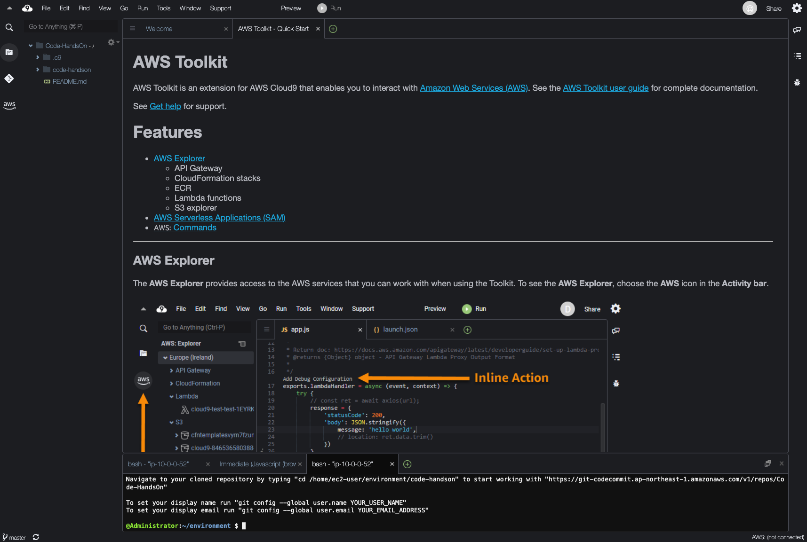
1.概要 TAB
プロジェクトのアクティビティを表示
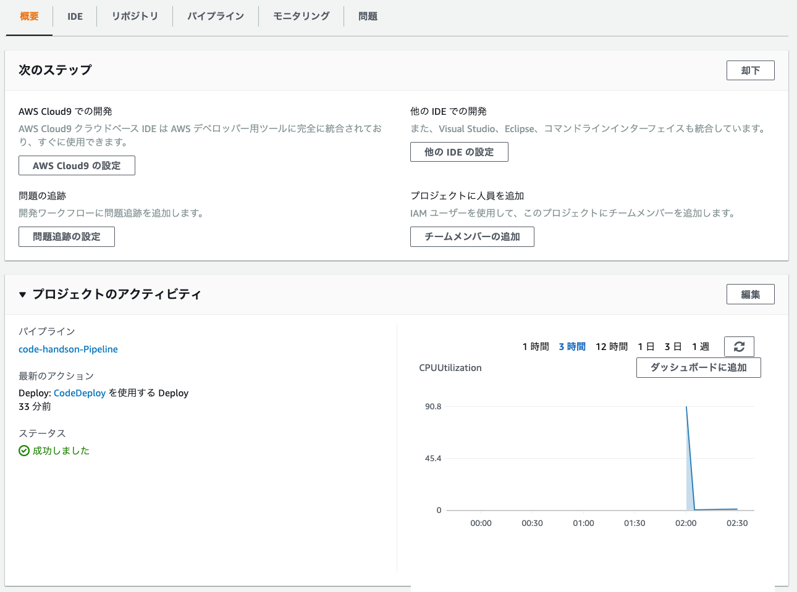
2.IDE TAB
プロジェクトコードにアクセス方法を紹介
今回はCloud9経由でアクセス
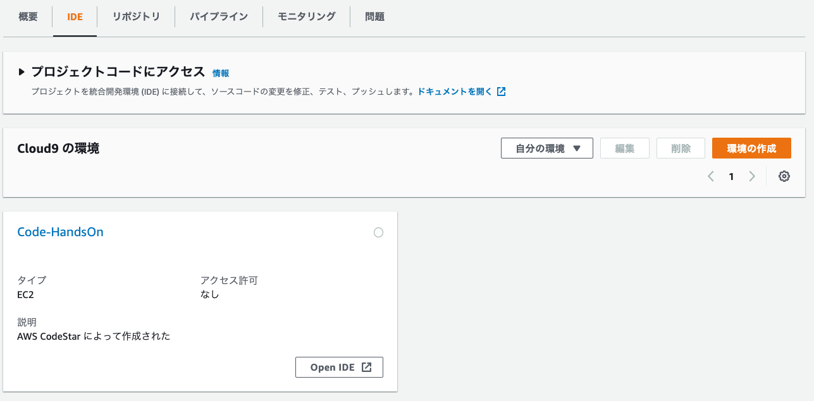
3.リポジトリ TAB
リポジトリ（CodeCommit）のアクティビティ表示
4.パイプライン TAB
パイプラインのアクティビティ表示
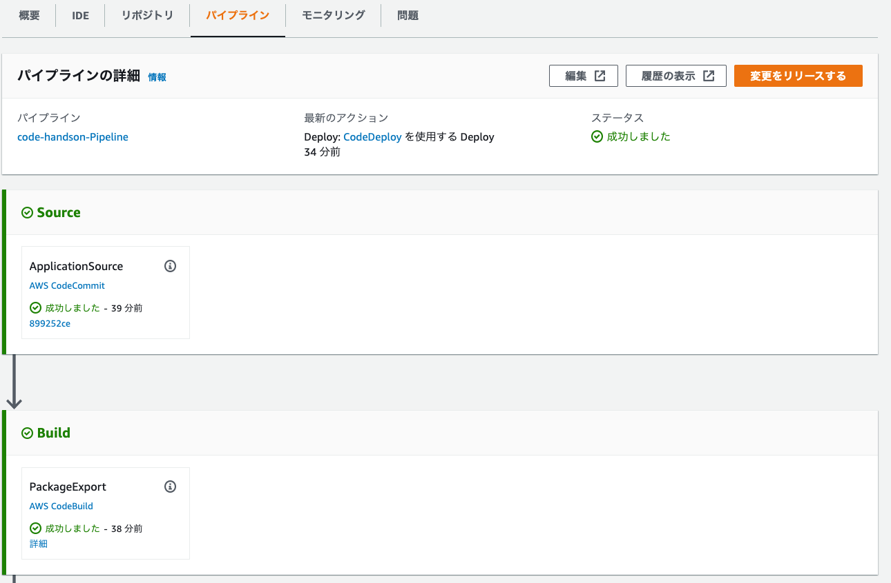
5.モニタリング TAB
プロジェクトが稼働しているEC2アクティビティ表示
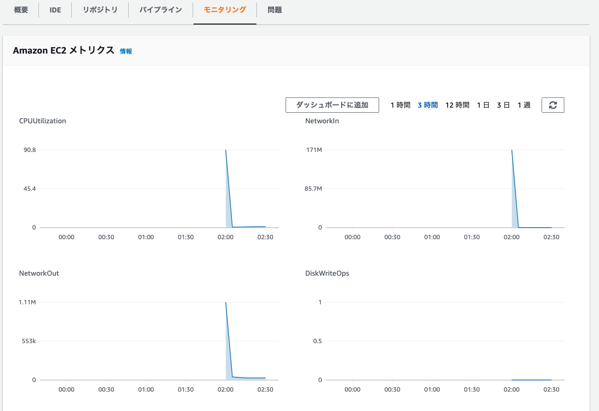
6.問題 TAB
問題追跡およびプロジェクト管理ツールとして、Jiraと連携
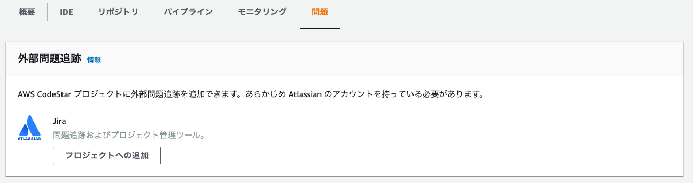
1.画面遷移
マネージメントコンソール → Cloud9 → code-handson → 「Open IDE」ボタン押下
2.index.htmlを開く
/home/ec2-user/environment/code-handson/webpage/index.htmlを開きます。
ダブルクリックで編集可能になります。
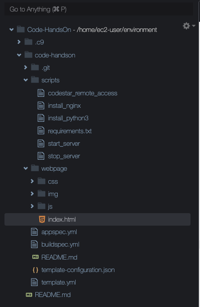
3.index.htmlを変更
61行目の「Congratulations!」を別の値に変更します。
「code-handson!」に変更し、ヘッダのFile⇨Saveで保存。
変更前
<div class="text">
<h1>Congratulations!</h1>
<h2>You just created an HTML5 web application</h2>
</div>
変更後
<div class="text">
<h1>code-handson!</h1>
<h2>You just created an HTML5 web application</h2>
</div>
4.変更内容をCodeCommitへ反映
変更内容をCodeCommitへ範囲します。
git操作が出来る人はconfig設定は任意に変更下さい、以下内容をCopy&PasteでもOKです。
cd ~/environment/code-handson/
git config --global user.name "Your Name"
git config --global user.email you@example.com
git add .
git commit -m "first commit"
git push
5.画面遷移
マネージメントコンソール → CodeStar → プロジェクト → code-handson → パイプラインTAB
git pushをトリガーにCodePipelineが稼働し、
Source、Build、Deployが正常終了していることを確認下さい
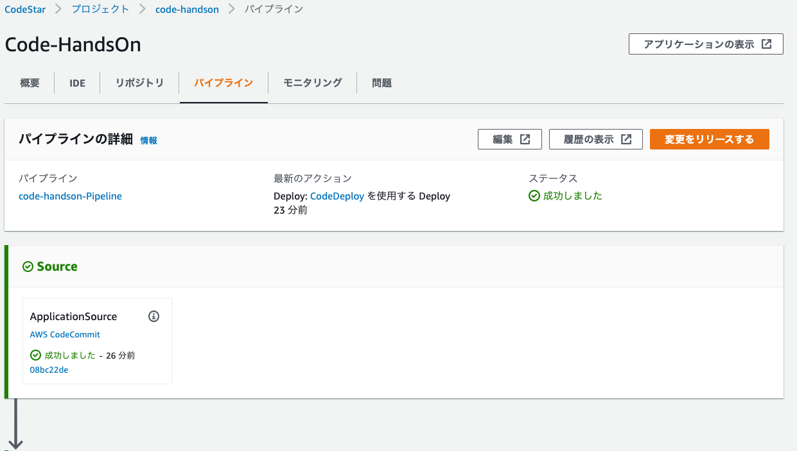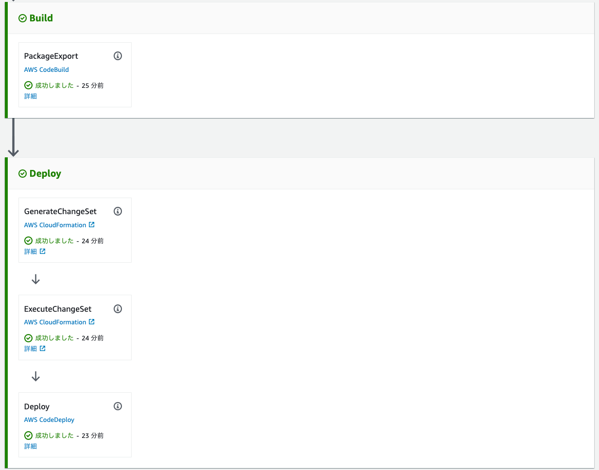
6.WEBサイト確認
メモしているWEBサイトにアクセスし
code-handson!と表示されていることを確認できれば成功です
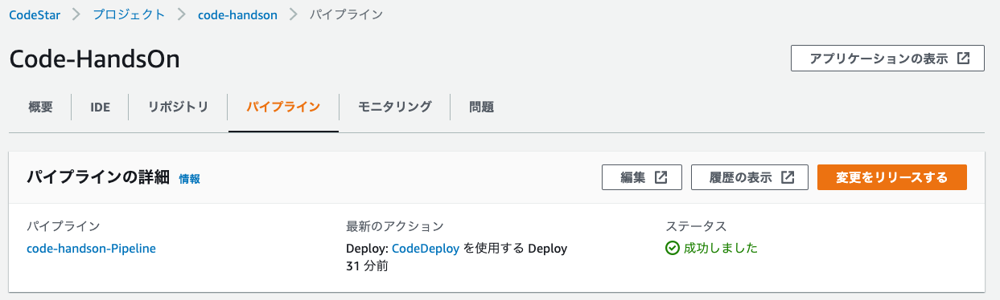 ↓
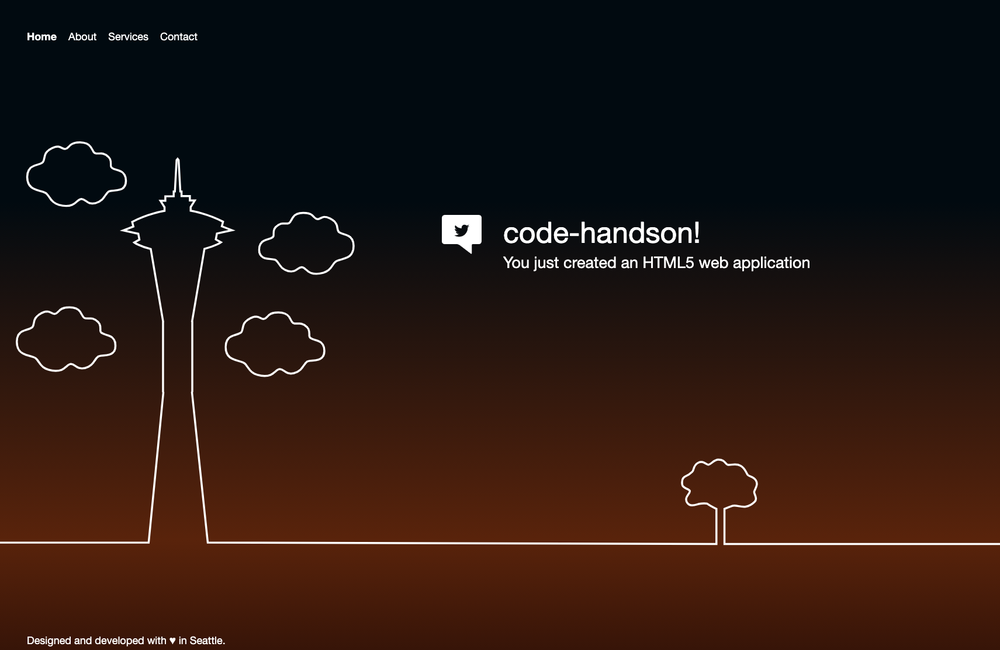
1.構成図（再度掲載）
2.整理
CodeStarで自動作成したので、実感が少ないかと思いますが、今回利用するAWSサービスの利用は完了しました。
ここからは各サービスを一つずつ作成しながら同様の機能を構築していきます。
1.画面遷移
マネージメントコンソール → IAM → ロール → 「ロールの作成」ボタン押下
2.ロールの作成(ユースケース)
以下を設定し、「次のステップ：アクセス権限」ボタンを押下
- 信頼されたエンティティの種類を選択:AWSサービス
- ユースケースの選択:CodeBuild 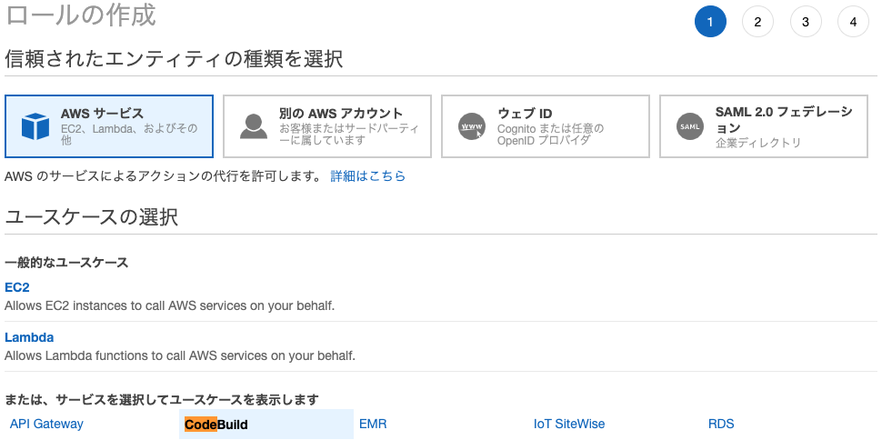
3.ロールの作成(ポリシー)
以下ポリシーを設定し、「次のステップ：タグ」ボタンを押下
- AmazonEC2FullAccess
- AWSCodeCommitFullAccess
- AmazonS3FullAccess
- AWSCodeDeployFullAccess
- AWSCodeBuildAdminAccess
- AWSCodePipeline_FullAccess
4.ロールの作成(タグ)
「次のステップ：タグ」ボタンを押下
5.ロールの作成(確認)
以下を設定し、「ロールの作成」ボタンを押下
- ロール名:code-handson2 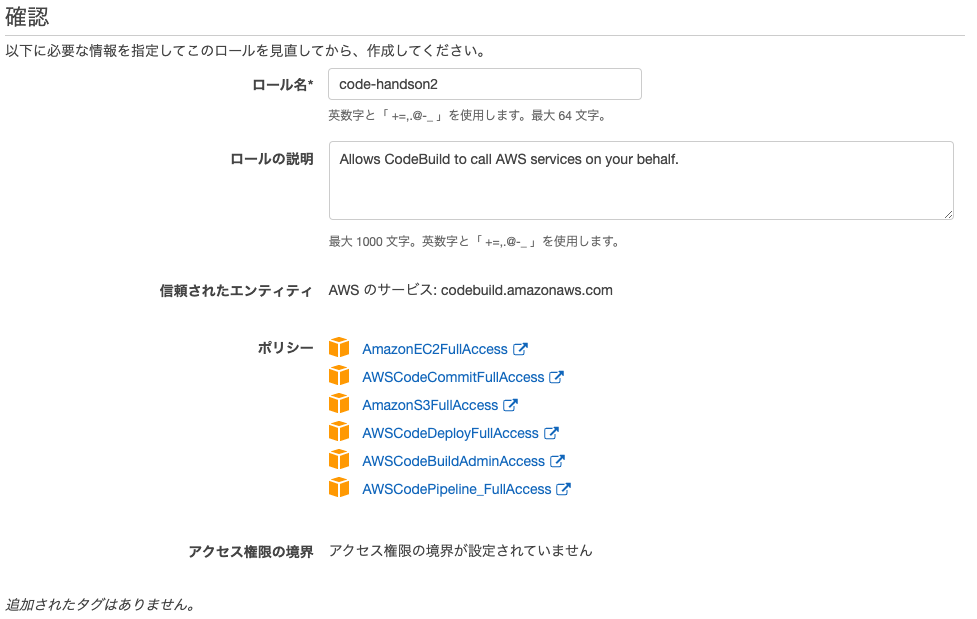
6.ロールの検索
検索バーで「code-handson2」と入力し、クリックする 
7.信頼環境の更新
信頼環境TABをクリックし、続いて、「信頼関係の編集」ボタンを押下
8.信頼環境の更新内容
更新後の内容で更新し、「信頼ポリシーの更新」ボタン押下 更新前
{
"Version": "2012-10-17",
"Statement": [
{
"Effect": "Allow",
"Principal": {
"Service": "codebuild.amazonaws.com"
},
"Action": "sts:AssumeRole"
}
]
}
更新後
{
"Version": "2008-10-17",
"Statement": [
{
"Effect": "Allow",
"Principal": {
"Service": [
"codepipeline.amazonaws.com",
"codebuild.amazonaws.com",
"codedeploy.amazonaws.com",
"events.amazonaws.com"
]
},
"Action": "sts:AssumeRole"
}
]
}
更新結果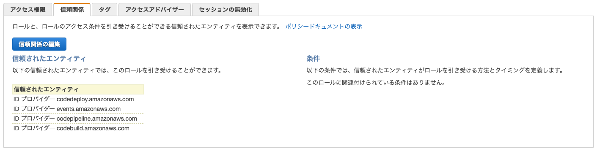
9.ロールの検索
CodeStarで作成されたEC2にアタッチされたロール「CodeStarWorker-code-handson-WebApp」を 検索バーで検索し、クリックする 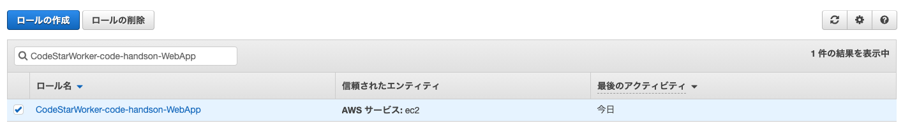
10.信頼環境の更新
アクセス権限TABをクリックし、続いて、「ポリシーをアタッチします」ボタンを押下
11.アクセス権限をアタッチする
以下ポリシーを設定し、「ポリシーのアタッチ」ボタンを押下
- AmazonS3FullAccess
↓ 結果
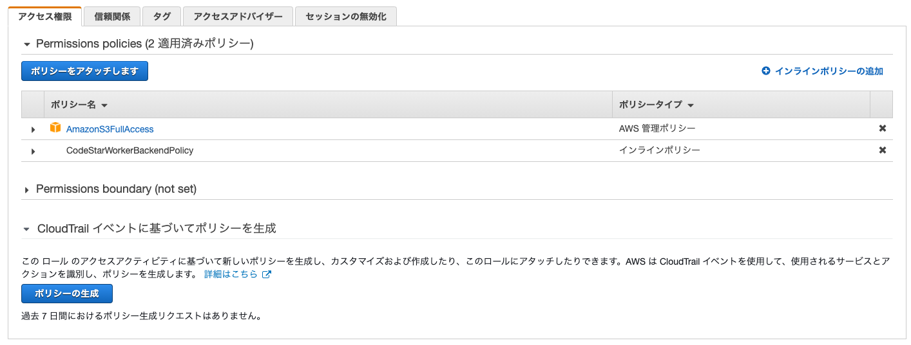
1.画面遷移
マネージメントコンソール → S3 → 「バケットを作成」ボタンを押下
2.バケットを作成
CodeBuildのアーティファクト先となるバケットを作成する
以下を設定し、「バケットを作成」ボタンを押下
- バケット名:任意で世界中で一意となる名前を設定
- 例：cloudbuild-{名前}-{日付}
- 具体例：cloudbuild-shigeruoda-20210521 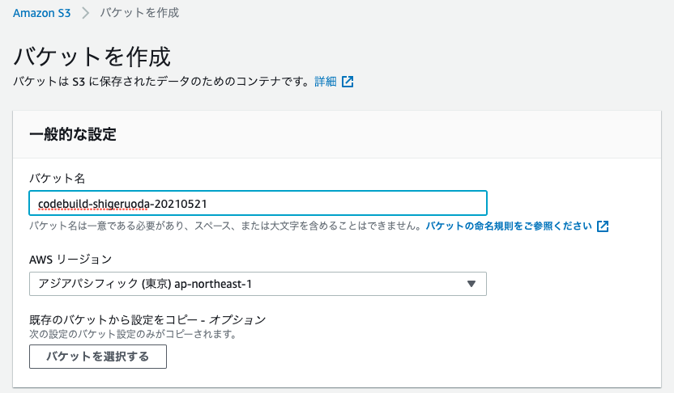
1.画面遷移
マネージメントコンソール → CodeCommit → 「リポジトリを作成」ボタンを押下
2.リポジトリを作成
以下を設定し、「作成」ボタンを押下
- リポジトリ名:code-handson2

3.URLのクローン
画面右上の「URLのクローン」ボタン⇨HTTPSのクローン
アドレスがコピーされるので、メモ帳などに貼り付け
手順書通りであるなら、以下となります
https://git-codecommit.ap-northeast-1.amazonaws.com/v1/repos/code-handson2

4.画面遷移
マネージメントコンソール → AWS Cloud9 → code-handson → 「Open IDE」ボタン押下
5.git設定を追加
Cloud9で新しいCodeCommitと連携します。
CodeCommitの手順書と違う名前で作成している場合には置き換えをお願いします。
cd ~/environment
pwd
git clone https://git-codecommit.ap-northeast-1.amazonaws.com/v1/repos/code-handson2
ls -l
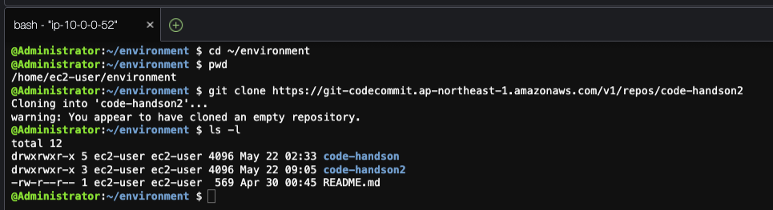
6.codeをコピー
code-handsonの内容をcode-handson2にコピーします。
手順書と違う名前で作成している場合には置き換えをお願いします。
cd ~/environment
pwd
cp -pr ./code-handson/* ./code-handson2/
ls -l ./code-handson2/
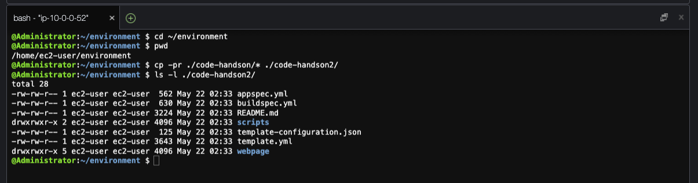
7.index.htmlを開く
/home/ec2-user/environment/code-handson2/webpage/index.htmlを開きます。
code-handsonディレクトリではないので注意
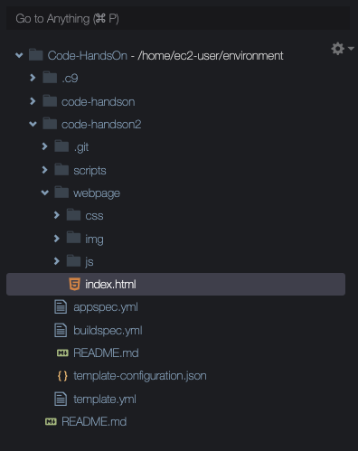
8.index.htmlを変更
61行目の「code-handson!」を別の値に変更。
ここの例では「code-handson2!!2!!」に変更し、ヘッダのFile⇨Saveで保存。
変更前
<div class="text">
<h1>code-handson!</h1>
<h2>You just created an HTML5 web application</h2>
</div>
変更後
<div class="text">
<h1>code-handson2!!2!!</h1>
<h2>You just created an HTML5 web application</h2>
</div>
9.変更内容をCodeCommitへ反映
変更内容をCodeCommitへ範囲します。
cd ~/environment/code-handson2
git add .
git commit -m "first commit to code-handson2"
git push
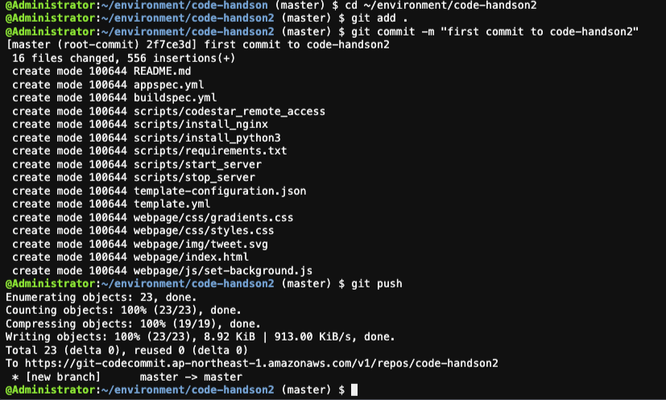
10.画面遷移
マネージメントコンソール → CodeCommit → code-handson2
CodeCommitに反映されていることを確認
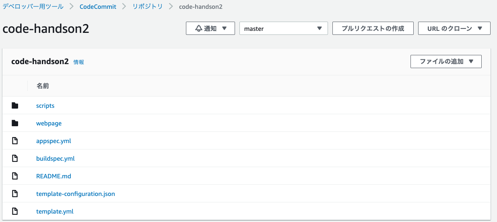
1.画面遷移
マネージメントコンソール → CodeBuild → 「ビルドプロジェクトを作成する」ボタンを押下
2.ビルドプロジェクトを作成する
以下を設定し、「ビルドプロジェクトを作成する」ボタンを押下
プロジェクトの設定
- プロジェクト名:code-handson2
ソース
- ソースプロバイダー:AWS CodeCommit
- リポジトリ:code-handson2
- リファレンスタイプ:ブランチ
- ブランチ:master
環境
- 環境イメージ:マネージド型イメージ
- オペレーティングシステム:Amazon Linux2
- ランタイム:Standard
- イメージ:aws/codebuild/amazonlinux2-x86_64-standard:3.0
- イメージのバージョン:aws/codebuild/amazonlinux2-x86_64-standard:3.0-21.04.23
- 環境タイプ:Linux
- サービスロール:既存のサービスロール
- ロールのARN
- ロール名:code-handson2
- AWS CodeBuild にこのサービスロールの編集を許可し、このビルドプロジェクトでの使用を可能にする:OFF
Buildspec
- ビルド仕様:buildspecファイルを使用する
アーティファクト
- タイプ:Amazon S3
- バケット名:先ほど作成したS3バケット名を選択
- アーティファクトのパッケージ化:Zip
ログ
- CloudWatch Logs:OFF
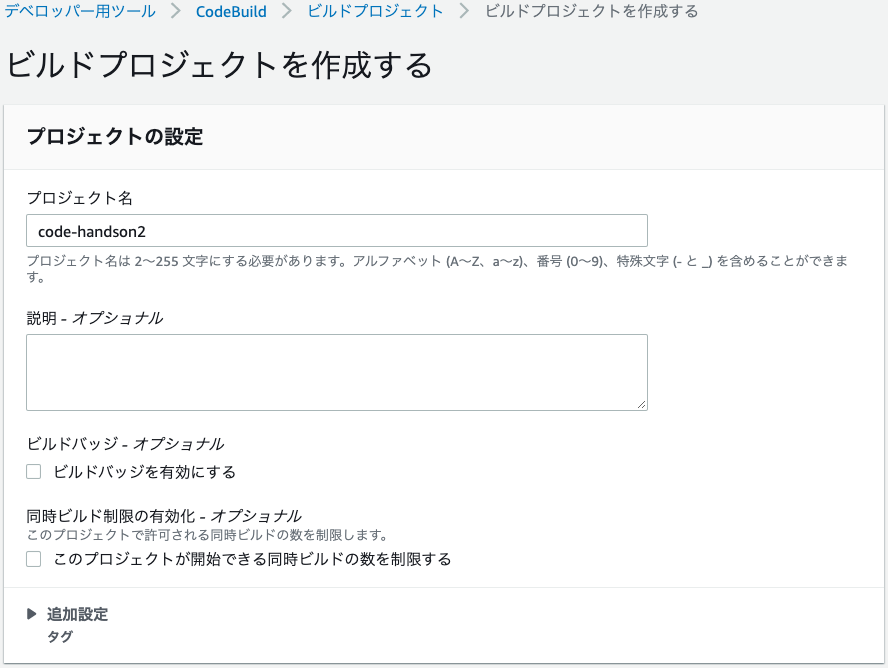 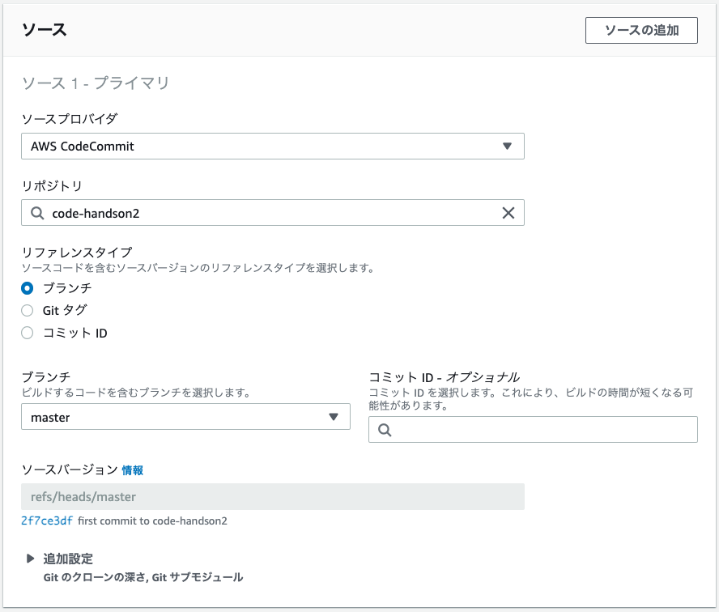 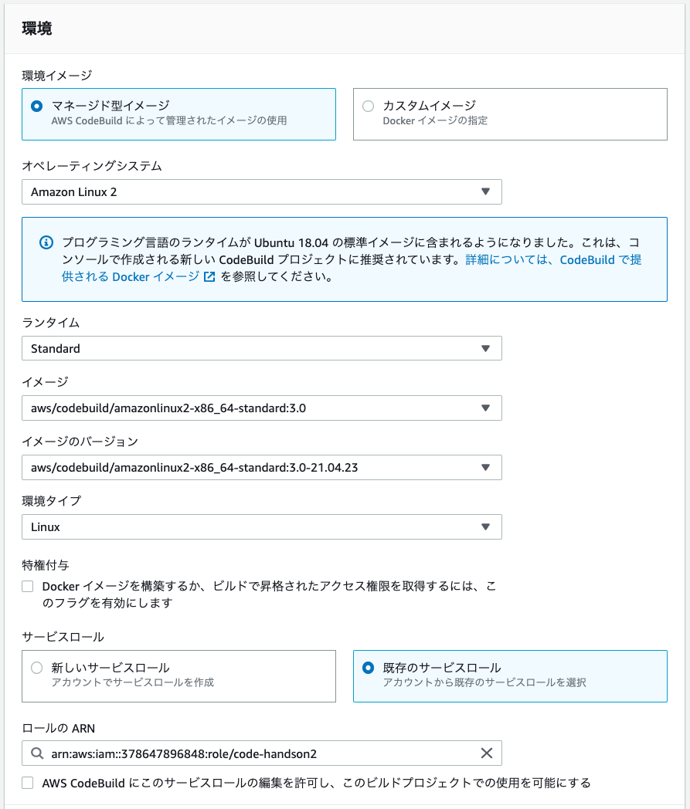 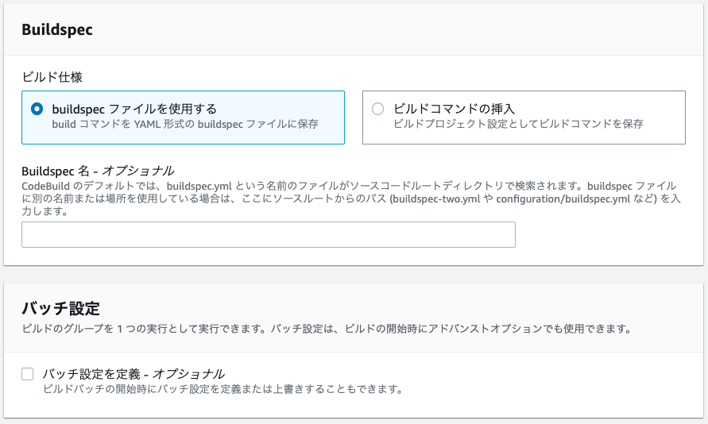 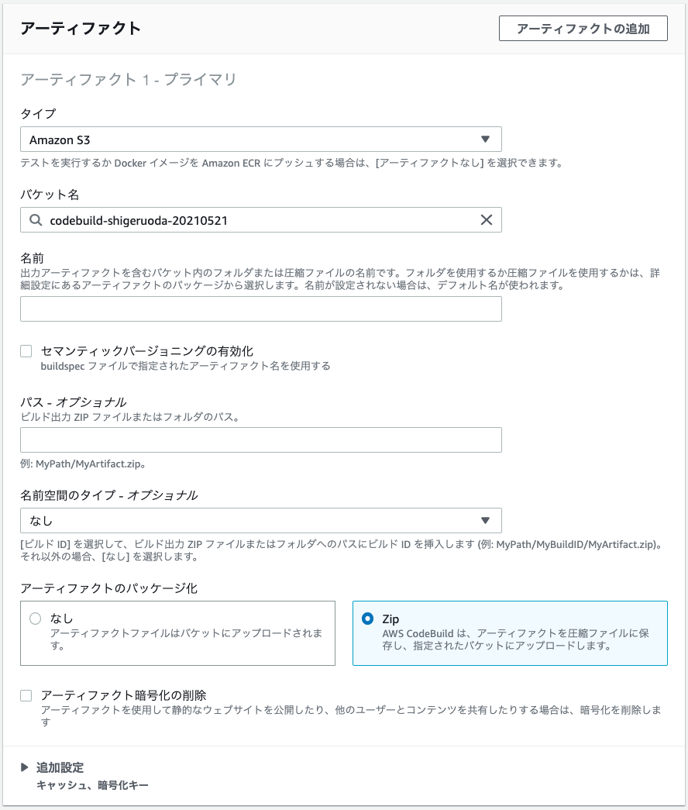 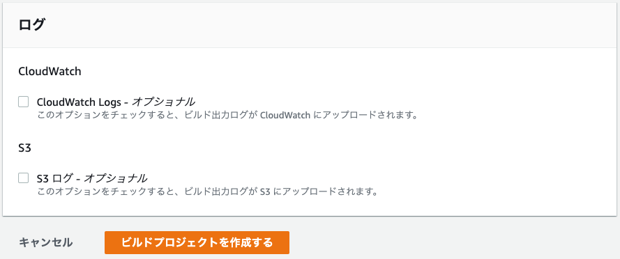
3.buildspec.ymlの中身確認
buildspec.ymlを確認します。
buildspec.ymlはビルド仕様を記述するファイルです。
仕様についての詳細はこちらを確認下さい
https://docs.aws.amazon.com/ja_jp/codebuild/latest/userguide/build-spec-ref.html
version: 0.2
phases:
install:
runtime-versions:
java: corretto11
post_build:
commands:
# Do not remove this statement. This command is required for AWS CodeStar projects.
# Update the AWS Partition, AWS Region, account ID and project ID in the project ARN in template-configuration.json file so AWS CloudFormation can tag project resources.
- sed -i.bak 's/\$PARTITION\$/'${PARTITION}'/g;s/\$AWS_REGION\$/'${AWS_REGION}'/g;s/\$ACCOUNT_ID\$/'${ACCOUNT_ID}'/g;s/\$PROJECT_ID\$/'${PROJECT_ID}'/g' template-configuration.json
artifacts:
files:
- '**/*'
- 'template-configuration.json'
version
buildspec のバージョンを表します。0.2 を使用することをお勧めします。
phases
ビルドの各段階で CodeBuild が実行するコマンドを表します。
phases/install
インストール時に CodeBuild が実行するコマンドがあれば、ここに記載します。
phases/install/runtime-versions
ランタイムバージョンを指定することが出来ます。
このハンズオンでは「java: corretto11」を指定しています。
phases/post_build
ビルドの後に CodeBuild が実行するコマンドがあれば、ここに記載します。
このハンズオンでtemplate-configuration.jsonファイルを更新して、CloudFormationがタグを付けれるようにしています。
CodeStar用のコマンドです
artifacts
CodeBuild がビルド出力を見つけることができる場所
artifacts/files
ビルド環境でのビルド出力アーティファクトを含む場所を示します
このハンズオンでは以下ファイルをアーティファクトします。
- '*/‘はすべてのファイルを再帰的に示します
- ‘template-configuration.json'はこの１ファイルを示します
4.ビルドを開始
「ビルドを開始」ボタンを押下
設定されたビルド処理が正常終了することを確認
正常終了後にアーティファクトのアップロード場所のリンクをクリックすると、S3に保存されたアーティファクトを確認することが出来ます。
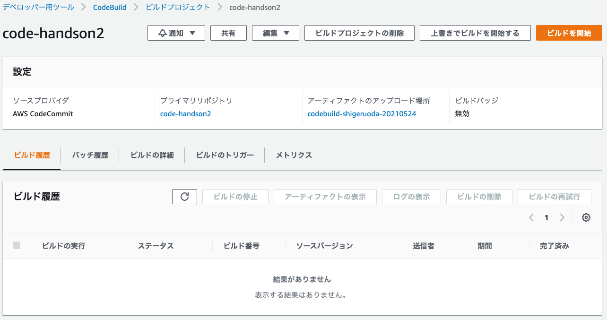 ↓ 処理後 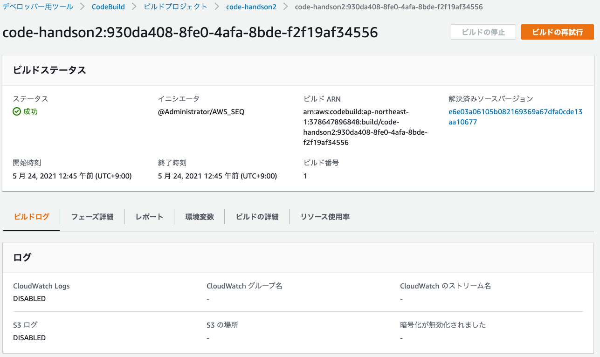 ↓ ビルドの詳細TAB ⇨ アーティファクト ⇨ アーティファクトのアップロード場所 ⇨ リンクをクリック 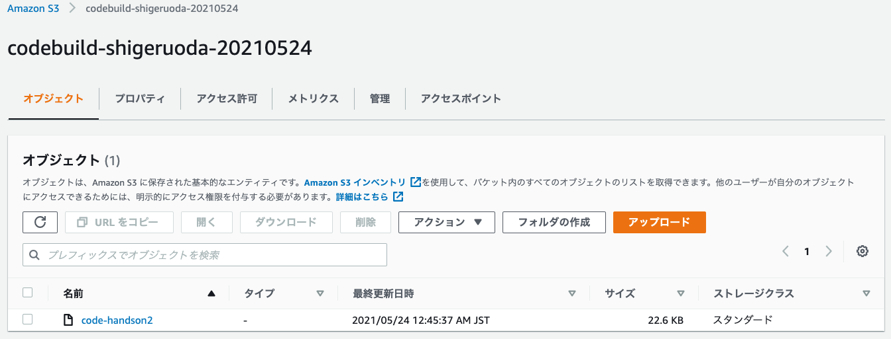
1.画面遷移
マネージメントコンソール → CodeDeploy → 左メニューで開始方法
2.アプリケーションの作成
以下を設定し、「アプリケーションの作成」ボタンを押下
- アプリケーション名:code-handson2
- コンピューティングプラットフォーム:EC2/オンプレミス 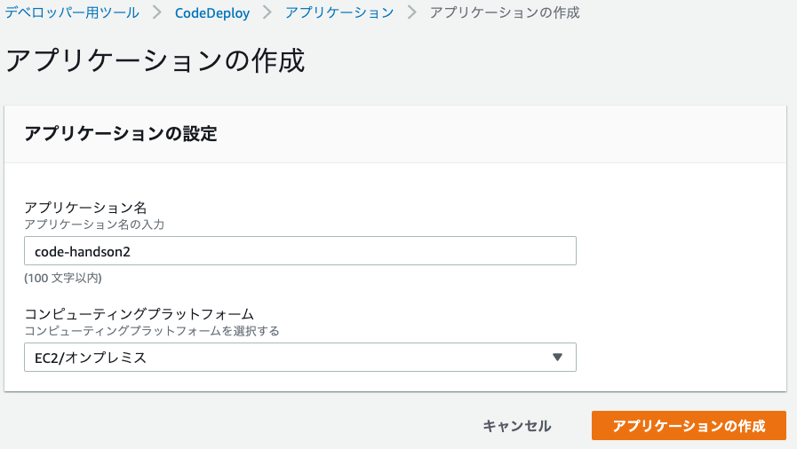
3.画面遷移
デプロイグループTAB ⇨ 「デプロイグループの作成」ボタンを押下
4.デプロイグループの作成
以下を設定し、「デプロイグループの作成」ボタンを押下
デプロイグループ名
- デプロイグループ名の入力:code-handson2
サービスロール
- サービスロールの入力:code-handson2
デプロイタイプ
- アプリケーションのデプロイ方法を選択する:インプレース
環境設定
- Amazon EC2 インスタンス:ON
- タググループ キー:Name
- タググループ 値:code-handson-WebApp
AWS Systems Manager を使用したエージェント設定
- AWS CodeDeploy エージェントのインストール:今すぐ更新し、更新をスケジュール
デプロイ設定
- デプロイ設定:CodeDeployDefault.AllAtOnce
Load balancer
- ロードバランシングを有効にする:OFF 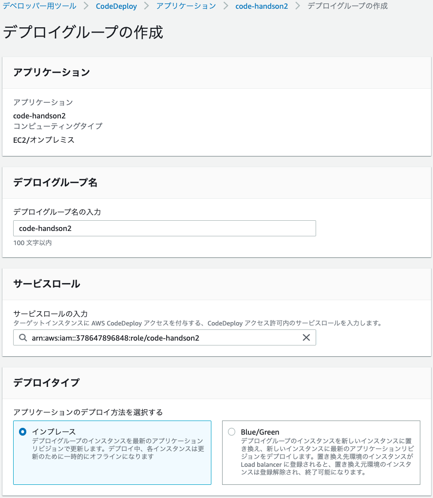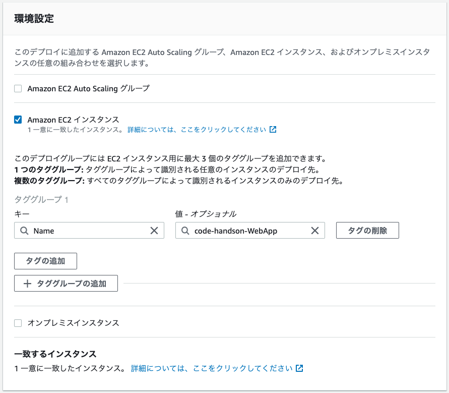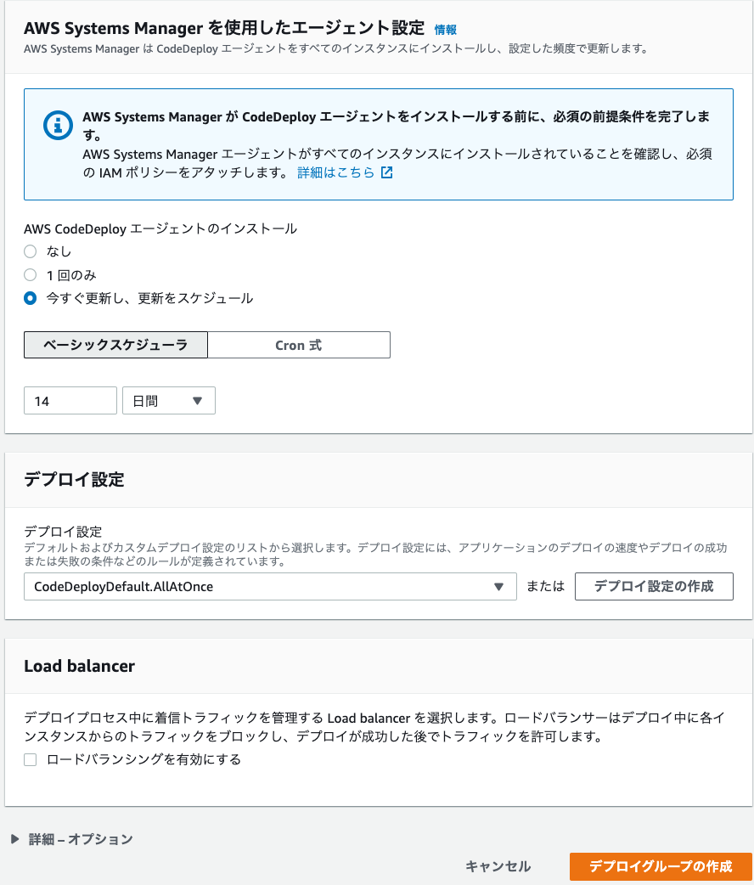
5.画面遷移
「デプロイの作成」ボタンを押下
6.デプロイの作成
以下を設定し、「デプロイの作成」ボタンを押下 デプロイ設定
- デプロイグループ:code-handson2
- リビジョンタイプ:アプリケーションは Amazon S3 に格納されています
- リビジョンの場所:s3://{作成したバケット名}/code-handson2
- リビジョンファイルの種類:.zip
追加のデプロイ動作設定
- コンテンツオプション:コンテンツの上書き 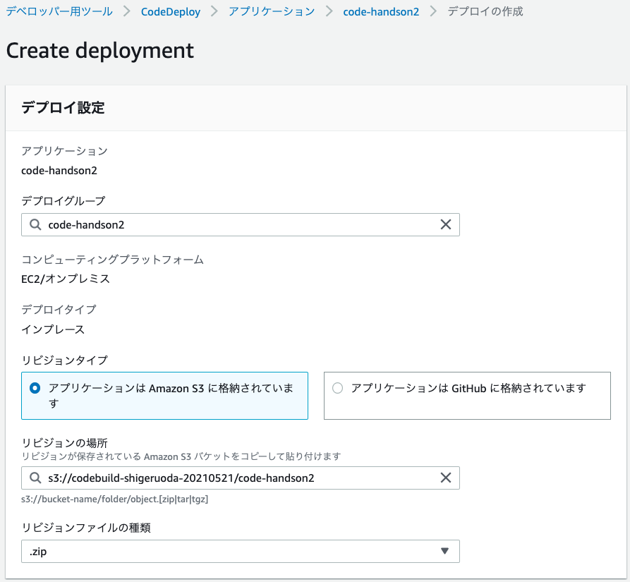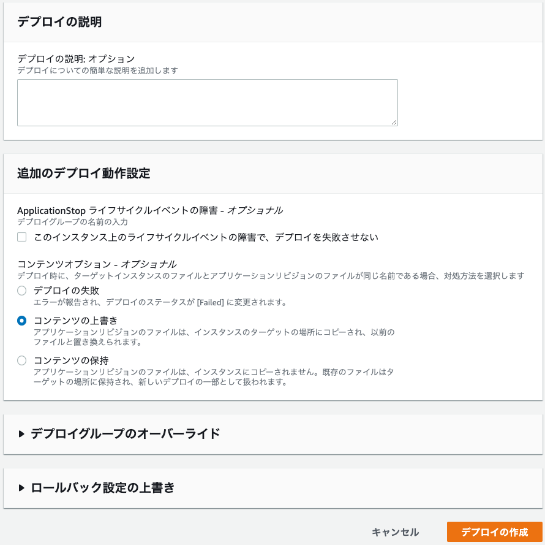
7.デプロイの実施
デプロイ処理が自動的に開始されます。
ここまでの設定が正しい場合には正常終了します。
異常終了する場合にはView eventsでのログを確認下さい。
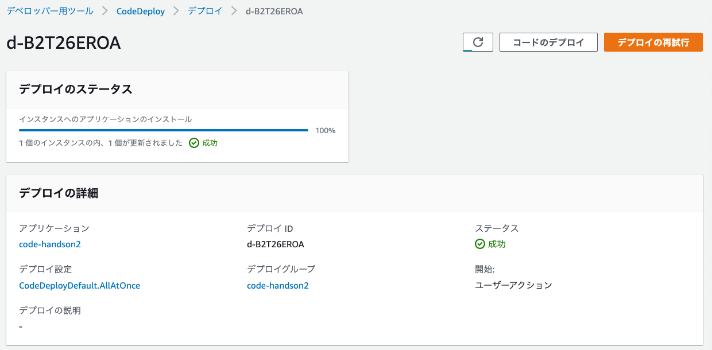 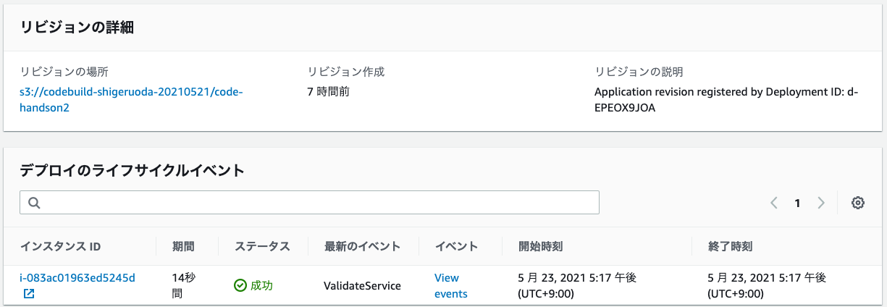 ↓ View eventsをクリック
エラーログはこちらを確認
8.ブラウザでの確認
CodeStarで作成したブラウザにアクセスしてみましょう
「code-handson2!!2!!」と表示されているかと思います。
1.画面遷移
マネージメントコンソール → CodePipeline → 「パイプラインを作成する」ボタン押下
2.パイプラインの設定を選択する
以下を設定し、「次に」ボタンを押下
パイプラインの設定
- パイプライン名:code-handson2
- サービスロール:既存のサービスロール
- ロールのARN:arn:aws:iam::[AWSアカウント]:role/service-role/code-handson2
高度な設定
- アーティファクトストア:カスタムロケーション
- バケット:[みなさんのS3バケット名]
- 暗号化キー:デフォルトのAWSマネージド型キー
3.ソースステージを追加する
以下を設定し、「次に」ボタンを押下
ソース
- ソースプロバイダー:AWS CodeCommit
- リポジトリ名:code-handson2
- ブランチ名:master
- 検出オプションを変更する:Amazon CloudWatch Events（推奨）
- 出力アーティファクト形式:CodePipeline のデフォルト
4.ビルドステージを追加する
以下を設定し、「次に」ボタンを押下
ソース
- プロバイダーを構築する:AWS CodeBuild
- リージョン:アジアパシフィック（東京）
- プロジェクト名:code-handson2
- ビルドタイプ:単一ビルド
5.デプロイステージを追加する
以下を設定し、「次に」ボタンを押下
デプロイ
- プロバイダーを構築する:AWS CodeDeploy
- リージョン:アジアパシフィック（東京）
- アプリケーション名:code-handson2
- デプロイグループ:code-handson2
6.レビュー
「パイプラインを作成」ボタン押下
7.パイプインの正常終了確認
処理が自動的に流れるので、Source、Build、Deployが正常終了することを確認して下さい
1.画面遷移
マネージメントコンソール → AWS Cloud9 → code-handson → 「Open IDE」ボタン押下
2.index.htmlを開く
/home/ec2-user/environment/code-handson2/webpage/index.htmlを開きます。
3.index.htmlを変更
61行目の「code-handson2!!2!!」を別の値に変更。
ここの例では「code-handson End!!!」に変更し、ヘッダのFile⇨Saveで保存。
変更前
<div class="text">
<h1>code-handson2!!2!!</h1>
<h2>You just created an HTML5 web application</h2>
</div>
変更後
<div class="text">
<h1>code-handson End!!!</h1>
<h2>You just created an HTML5 web application</h2>
</div>
4.変更内容をCodeCommitへ反映
変更内容をCodeCommitへ範囲します。
cd ~/environment/code-handson2
git add .
git commit -m "end commit"
git push
5.画面遷移
マネージメントコンソール → CodePipeline → code-handson2
gitpushをトリガーにCodePipelineが稼働し、
Source、Build、Deployが正常終了していることを確認下さい
6.WEBサイト確認
サイトにcode-handson End!!!と表示されていることを確認できれば成功です
1.終わり
ここまででハンズオンが終わりです。
とりあえず開発環境を作りたいのであれば、CodeStarでベースを作成し
既存環境にCICD環境を構築する場合には個々に設定することになります。
2.環境削除
以下の削除をお願いします。
CodeStar
- code-handson ⇨ 削除進捗はCloudFormationで確認(5分程度) ⇨ IAM理由でエラーになる
CloudFomation
- awscodestar-code-handson ⇨ WebAppRoleのチェックボックスをONにして削除
IAM ロール
- code-handson2
- CodeStarWorker-code-handson-CloudFormation
- CodeStarWorker-code-handson-WebApp
- cwe-role-ap-northeast-1-code-handson2
IAM ポリシー
- start-pipeline-execution-ap-northeast-1-code-handson2
CodeCommit
- code-handson2
CodeBuild
- code-handson2
CodePipeline
- code-handson2
S3
- aws-codestar-ap-northeast-1-{アカウントID}
- aws-codestar-ap-northeast-1-{アカウントID}-code-handson-pipe
- ご自身で作成されたバケット
EC2 キーペア
- code-handson
VPC
- code-handson